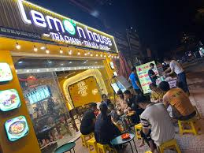
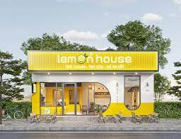
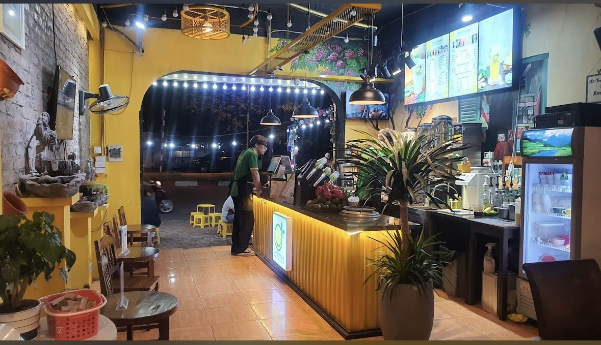

1/ Đối tượng khách hàng
Quán trà chanh phù hợp để mọi người dễ dàng tụ tập trò chuyện, giải tỏa cảm xúc cùng nhau sau một ngày dài làm việc. Chi phí cho một buổi trà chanh lại rất rẻ, cộng thêm việc ngồi quán trà chanh rất thoải mái để trò chuyện, vui đùa, mà không sợ làm ảnh hưởng ồn ào người khác như quán cafe.

Vì thế kinh doanh trà chanh phù hợp với nhiều đối tượng khách hàng. Không chỉ học sinh, sinh viên, mà cả các nhân viên văn phòng, người lao động, doanh nhân cũng đều thích đến quán trà chanh để tán gẫu. Cùng với chi phí đầu tư thấp hơn so với các hình thức kinh doanh khác, thời gian thu hồi vốn và lợi nhuận được rút ngắn, quán trà chanh phù hợp để bạn đầu tư mở kinh doanh nếu vốn của bạn không nhiều.
2/ Vị trí
Một số địa điểm thích hợp để mở quán trà chanh là những khu vực gần trường đại học, công viên, trung tâm,…vì những nơi này sẽ có đa số khách hàng là giới trẻ. Nhưng lưu ý khi chọn mặt bằng, cần đảm bảo không gian quán phải rộng rãi, thoáng mát với luồng gió tự nhiên càng tốt. Như thế sẽ tạo cảm giác thoải mái, cho thực khách khi trải nghiệm sản phẩm của quán.

3/ Thiết kế
Vì đối tượng hướng đến của quán là giới trẻ và cả người lớn. Thế nên bạn cần xác định phong cách quán cho phù hợp: có thể là quán vỉa hè, ngoài trời, quán máy lạnh sang trọng,…Khi xác định được phong cách quán bạn sẽ dễ dàng có ý tưởng thiết kế hơn.
Bạn có thể tham khảo định hình phong cách quán, dựa vào đối tượng khách hàng mục tiêu mà bạn hướng đến. Thông thường sẽ có một số cách chọn phong cách sau:
Đối tượng tại các cổng trường, công viên: Phong cách lựa chọn dành cho nhóm đối tượng này thường là vỉa hè. Tận dụng không gian sân vỉa hè để mọi người có không gian thoáng đãng tự do trò chuyện. Vì đặc điểm đó thiết kế của các quán trà chanh này thường đơn giản, tập trung chủ yếu là đèn led bố trí ngoài trời, để tạo hiệu ứng lung linh.

Đối tượng tại các khu thành phố gần nhà dân, các công ty: Phong cách dành cho nhóm đối tượng này thường là theo chuỗi quán trà chanh nổi tiếng. Tức là chủ đầu tư lựa chọn mua nhượng quyền kinh doanh từ các quán trà chanh chuỗi nổi tiếng như: Bụi Phố, TMORE, 1975… Lựa chọn phong cách này, thì các chủ đầu tư phải tuân thủ thiết kế giống hệt thiết kế của quán trà chanh chuỗi.
Đối tượng khách hàng thích chụp ảnh: Lựa chọn thích hợp nhất cho nhóm đối tượng này sẽ là phong cách trà chanh trong nhà. Bạn cần tận dụng mọi nơi trong không gian quán, nhất là các bức tường để tạo nên những khung hình bắt mắt thu hút khách đến chụp hình, dùng nước.